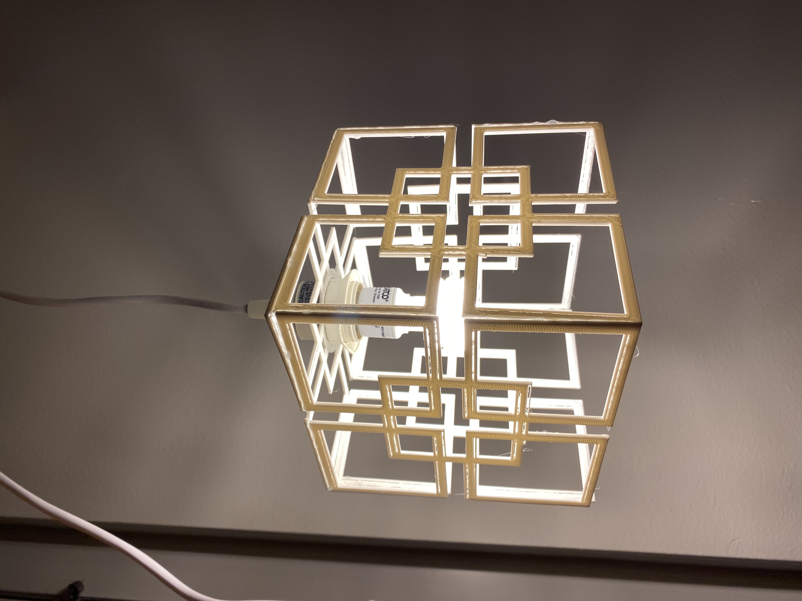
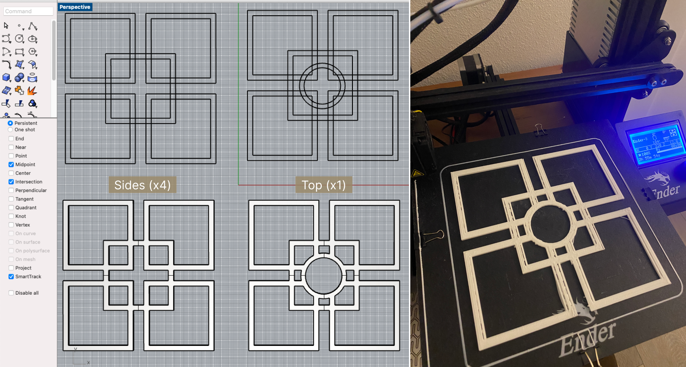
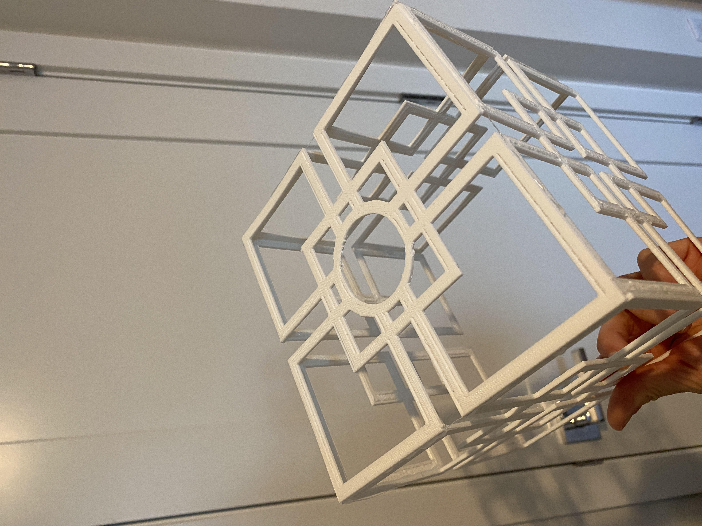
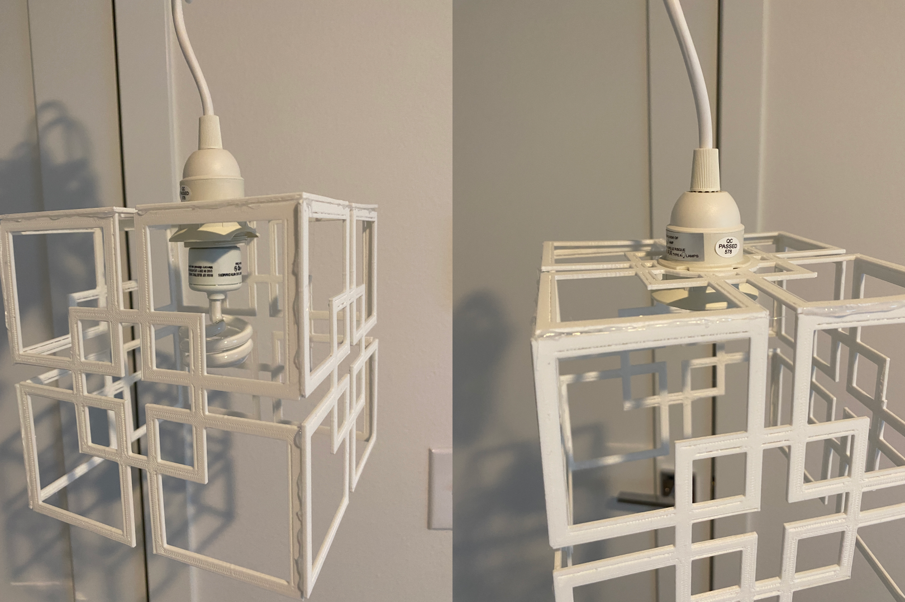
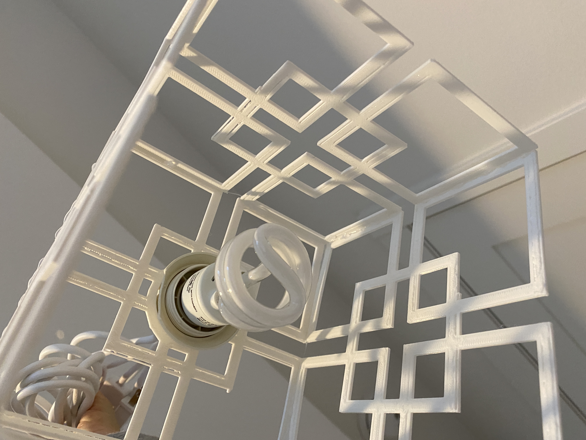
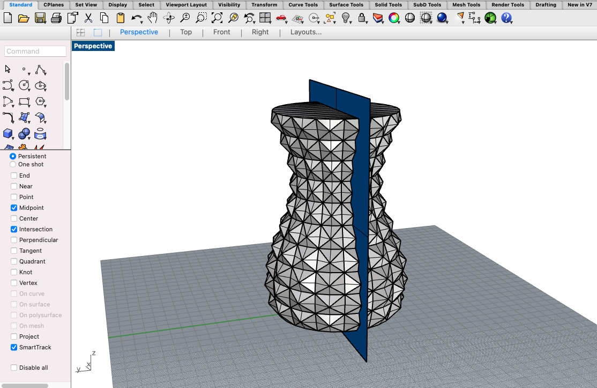
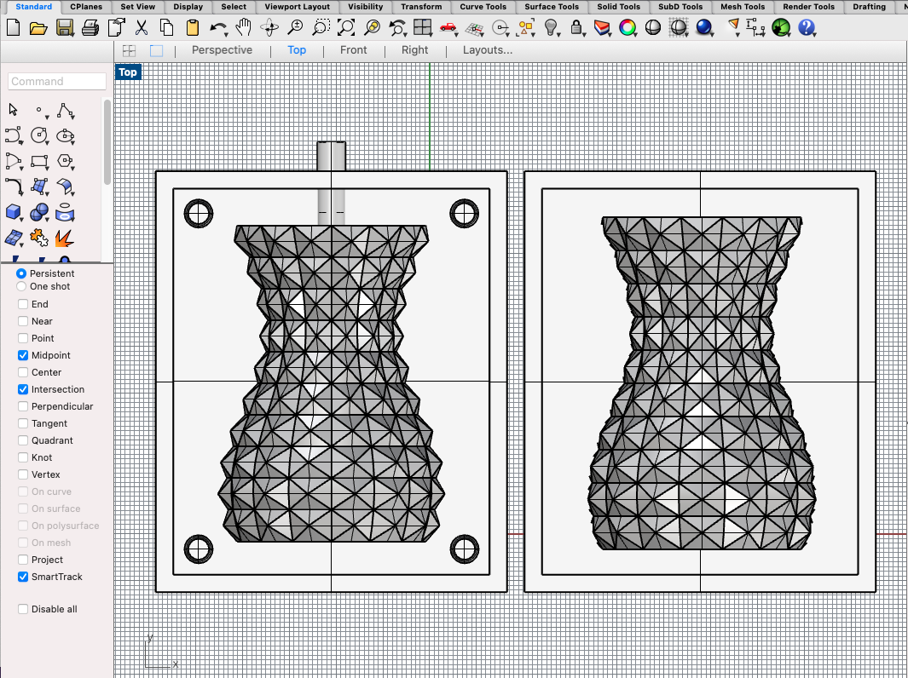
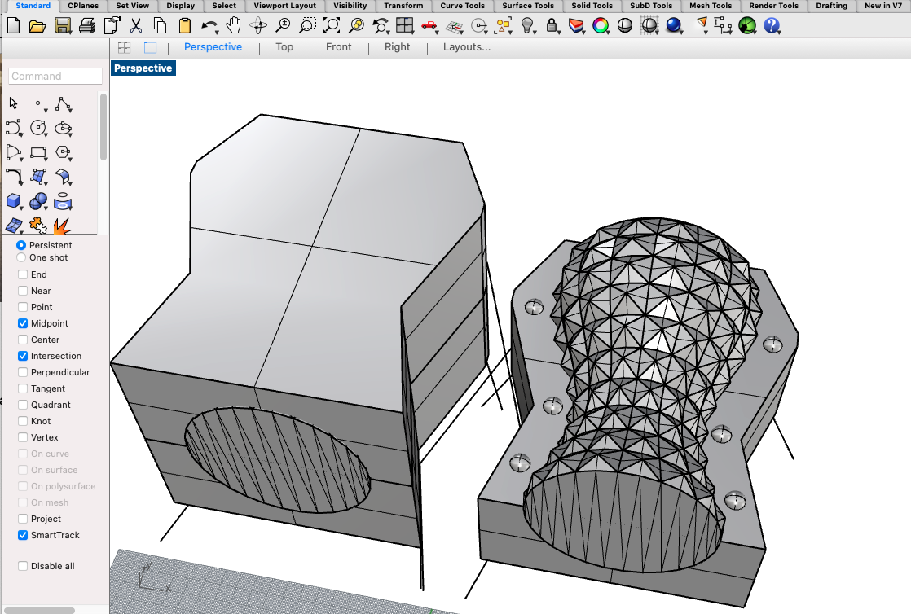

A6:Molding & Casting!
Nov. 22, 2022Lamp!
Here's a quick preview of the lamp:
Part 1
A recap of what went down last week:
A recap of what went down last week:
I created a moodboard of the type of lamps that I would want to recreate. Ultimately, I decided to recreate the top left design.

I did all my designs in Rhino where I created the top and side pieces.
Part 2
After printing the top piece, I iterated the diameter of the top piece a couple of times so it was wide enough to fit the innard (not pictured). Additionally, I played around with the extrusion level to get a feel of how thick the walls should be. Ultimately, I decided to go with an extrustion of 2.5mm; not very thin, but also thick enough to hold its shape. Since the sides were big, I printed each on individually which took 2hrs and 30mins each.
Once all the pieces were printed, it was time to assemble. I originally tried using super glue but found that it was hard to stick due to the plastic material and that fact that my pieces were a thin to hold itself up. The next best option was using a hot glue gun – that was truly a lifesaver!
Here's the bottom of the lamp looking upwards. Assembling it into the innard and adding a light bulb in was a breeze.
Another look at the final result!

Molding & Casting!
I used the low poly vases from Thingiverse when doing my mesh assignment. I decided to use one of the vases for my mold. I imported the stl into Rhino and split it in half.
I worked on one side of the mold by adding the keys using truncated cones and half a cylinder for the pouring gate.
While designing the molds in Rhino, I had a lot of trouble aligning both sides accurately. I attended Junchao's office hours and he demonstrated a different approach to creating the molds.
Next steps:
I plan to use the boundingbox approach to create the molds. Add the pouring vent and spruces. Test print. Start to use oomoo and ensure that there's enough time to cure.
Acknowledgement
Thank you Junchao for guiding me on a different approach on how to efficiently and effectively create the molds in Rhino!Resources
Low Poly VasesSource Files
Lamp - Rhino (.3dm)Lamp - Cura (.stl)
Lamp (Top) - gCode
Lamp (Side) - gCode
---
Vase Mold - Rhino (.3dm)
Vase Mold - Cura (.stl)
Return to Main